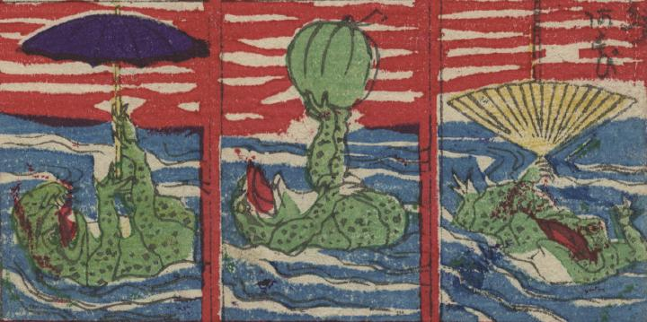

蛙たちの水遊び。水面に浮かび、扇やスイカ、傘などを持ち上げてポーズをとっている。
著作者：長谷川勘之助／出典：親書誌：U426_nichibunken_0278：滑[稽]蛙遊つくし；コッケイ カエル アソビ ツクシ／日付：2014／資源識別子：U426_nichibunken_0278_0012_0000
Copyright (c)2010- International Research Center for Japanese Studies, Kyoto, Japan. All rights reserved.